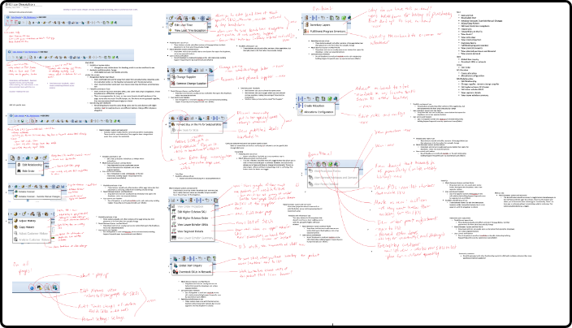

This Manhattan product helps retail companies plan and forecast their inventory. There is more than meets the eye that goes into this process, with countless numbers to crunch and data to process. As such, those tasked with handling figuring out how much to order and process to keep their inventory stocked optimally benefit from software that can help them manage their decisions. This is where the demand forecast inventory optimization product, or DFIO, comes into play.
This product was pre-existing and had quite an old-fashioned design. I was tasked with “modernizing” its look, essentially re-skinning and relocating items on the page in a sensible fashion. The clutter of information makes it difficult for new users to onboard, but old users are so used to the layout that totally rearranging items would make them lose efficiency in an industry where each second spent on a screen counts. That brings me to my main goal.
Research, research, research.
I spent countless hours sitting with real users trying to understand the application inside and out, while identifying problems they experience while using it.
On top of re-skinning, I had to redesign how their page navigation worked. Here’s a look into my design process.
1
I researched and documented existing navigation patterns and analyzed which pattern would suit the application the best.
I documented everything wrong with the existing patterns based on UX design principles and heuristics to make sure I was making the right decisions.
I consolidated and presented my findings to my team and the DFIO team before presenting my final mockups. This answered any questions they may have had regarding my choices.
My biggest roadblocks were definitely my limited knowledge on supply chain operations, as I was just an intern at Manhattan Associates. However, I was constantly sending emails, setting up meetings with the DFIO team, and getting clarifications with my team during design reviews, to make sure that my solution was the best it could be.
This application is currently being developed for the 2020 release. I am working on several other applications within the DFIO suite to keep the screen consistent.
I definitely learned a ton about the nitty gritty parts of UX design that most people don’t see when they think about UX. There’s a reason for everything. People cannot question your decisions when you present them with strong rational. But be open to critique, and don’t be afraid to ask for help!